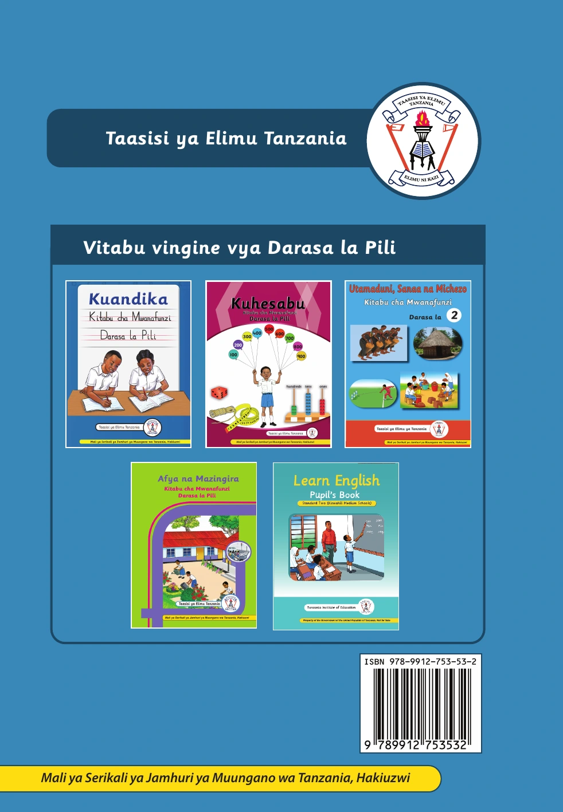

Maandishi ya jalada
Taasisi ya Elimu Tanzania
Vitabu vingine vya Darasa la Pili
- Kuandika
- Kuhesabu
- Utamaduni, Sanaa na Michezo
- Afya na Mazingira
- Learn English — Pupil’s Book
ISBN 978–9912–735–53–2
Mali ya Serikali ya Jamhuri ya Muungano wa Tanzania, Hakiuzwi